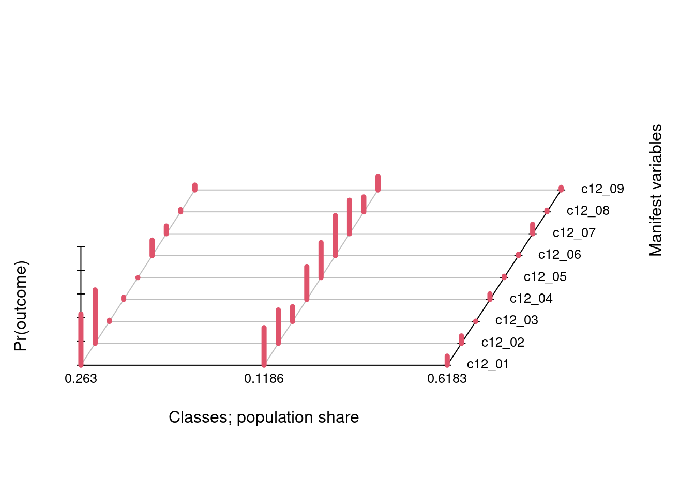
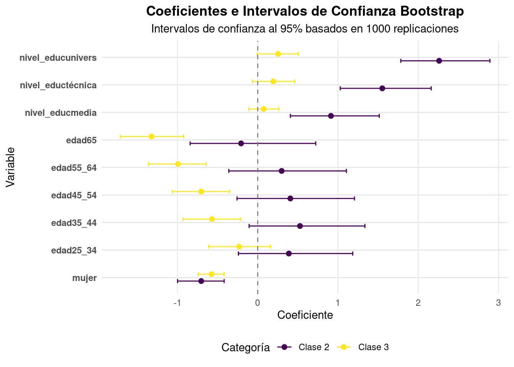
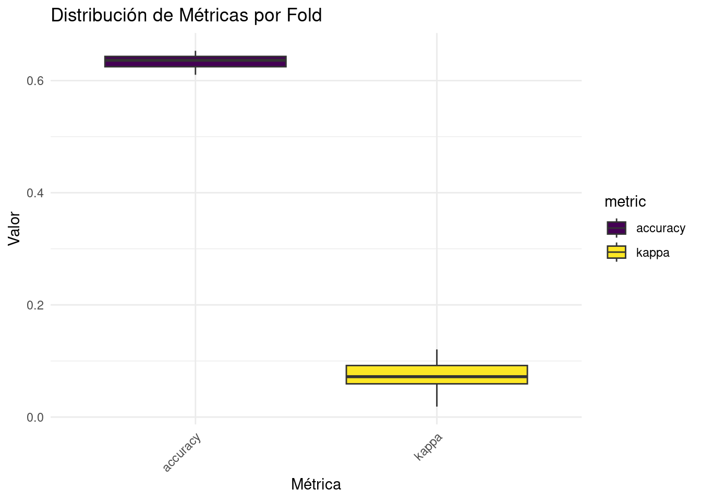
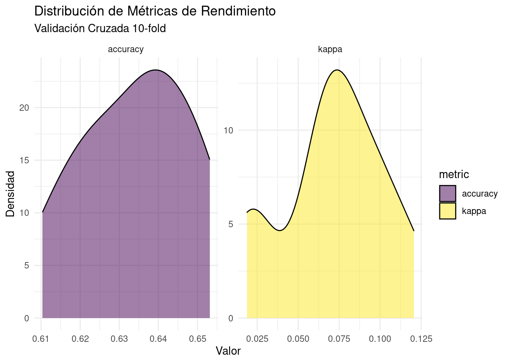

```{r}
#| warning: false
#| message: false
# Cargar librerías necesarias
library(tidyverse)
library(nnet)
library(boot)
library(caret)
library(tidymodels)
library(yardstick)
library(rsample)
# Cargar los datos
url <- "https://github.com/rcantillan/ricantillan.rbind.io/raw/main/dat/ELSOC/ELSOC_W03_v2.00_R.RData"
response <- httr::GET(url)
local_path <- "ELSOC_W03_v2.00_R.RData"
writeBin(response$content, local_path)
load("ELSOC_W03_v2.00_R.RData")
# Preparación inicial de datos
data_prep <- elsoc_2018 %>%
mutate(
mujer = case_when(
m0_sexo == 1 ~ 0,
m0_sexo == 2 ~ 1
),
edad = case_when(
m0_edad %in% 18:24 ~ "18_24",
m0_edad %in% 25:34 ~ "25_34",
m0_edad %in% 35:44 ~ "35_44",
m0_edad %in% 45:54 ~ "45_54",
m0_edad %in% 55:64 ~ "55_64",
m0_edad %in% 65:88 ~ "65"
),
nivel_educ = case_when(
m01 %in% 1:3 ~ "básica",
m01 %in% 4:5 ~ "media",
m01 %in% 6:7 ~ "técnica",
m01 %in% 8:10 ~ "univers"
)
) %>%
mutate(across(matches("c12_"),
~case_when(
. %in% c(-999, -888) ~ NA_real_,
. == 3 ~ 2,
TRUE ~ 1
))) %>%
select(idencuesta, mujer, edad, nivel_educ, c12_01:c12_09)
# Eliminar NA
data_clean <- data_prep %>% drop_na()
```1 Teoría
La regresión logística multinomial es una extensión de la regresión logística binaria que permite modelar variables dependientes categóricas con más de dos categorías. En nuestro caso, la variable dependiente son las clases latentes identificadas previamente. El modelo se especifica mediante la siguiente estructura matemática:
Para una variable dependiente con \(K\) categorías, se selecciona una categoría de referencia (usualmente la primera o última) y se modelan \(K-1\) logits: \[ \log\left(\frac{P(Y=k|X)}{P(Y=K|X)}\right) = \beta_{k0} + \beta_{k1}X_1 + \beta_{k2}X_2 + ... + \beta_{kp}X_p \]
Donde:
- \(k = 1,...,K-1\) representa las categorías no referencia
- \(K\) es la categoría de referencia
- \(X_1,...,X_p\) son las variables predictoras
- \(\beta_{kj}\) son los coeficientes para la categoría \(k\) y la variable predictora \(j\)
Las probabilidades se calculan como: \[ P(Y=k|X) = \frac{\exp(\beta_{k0} + \beta_{k1}X_1 + ... + \beta_{kp}X_p)}{1 + \sum_{m=1}^{K-1}\exp(\beta_{m0} + \beta_{m1}X_1 + ... + \beta_{mp}X_p)} \]
Para \(k = 1,...,K-1\), y para la categoría de referencia: \[ P(Y=K|X) = \frac{1}{1 + \sum_{m=1}^{K-1}\exp(\beta_{m0} + \beta_{m1}X_1 + ... + \beta_{mp}X_p)} \]
2 Datos
3 Clases latentes.
```{r}
set.seed(12345)
# Ajustar modelo LCA
f <- cbind(c12_01, c12_02, c12_03, c12_04, c12_05,
c12_06, c12_07, c12_08, c12_09) ~ NULL
lca3 <- poLCA::poLCA(f, data_clean, nclass = 3, graphs = TRUE)
# Función para extraer las proporciones de población del modelo LCA
get_class_proportions <- function(lca_model) {
# Extraer las proporciones directamente del modelo
props <- lca_model$P # P contiene las proporciones de clase estimadas
# Mostrar las proporciones
cat("Proporciones de población por clase:\n")
cat("=================================\n")
for(i in seq_along(props)) {
cat(sprintf("Clase %d: %.4f\n", i, props[i]))
}
# Devolver las proporciones para uso posterior si es necesario
return(invisible(props))
}
# Usar la función con el modelo LCA
get_class_proportions(lca3)
```Conditional item response (column) probabilities,
by outcome variable, for each class (row)
$c12_01
Pr(1) Pr(2)
class 1: 0.5695 0.4305
class 2: 0.6837 0.3163
class 3: 0.9235 0.0765
$c12_02
Pr(1) Pr(2)
class 1: 0.5504 0.4496
class 2: 0.7194 0.2806
class 3: 0.9375 0.0625
$c12_03
Pr(1) Pr(2)
class 1: 0.9897 0.0103
class 2: 0.8765 0.1235
class 3: 0.9973 0.0027
$c12_04
Pr(1) Pr(2)
class 1: 0.9794 0.0206
class 2: 0.7224 0.2776
class 3: 0.9524 0.0476
$c12_05
Pr(1) Pr(2)
class 1: 1.0000 0.0000
class 2: 0.7059 0.2941
class 3: 0.9887 0.0113
$c12_06
Pr(1) Pr(2)
class 1: 0.8689 0.1311
class 2: 0.6619 0.3381
class 3: 0.9882 0.0118
$c12_07
Pr(1) Pr(2)
class 1: 0.9347 0.0653
class 2: 0.7174 0.2826
class 3: 0.9201 0.0799
$c12_08
Pr(1) Pr(2)
class 1: 0.9812 0.0188
class 2: 0.8742 0.1258
class 3: 0.9855 0.0145
$c12_09
Pr(1) Pr(2)
class 1: 0.9590 0.0410
class 2: 0.8846 0.1154
class 3: 0.9780 0.0220
Estimated class population shares
0.263 0.1186 0.6183
Predicted class memberships (by modal posterior prob.)
0.2933 0.0732 0.6335
=========================================================
Fit for 3 latent classes:
=========================================================
number of observations: 3675
number of estimated parameters: 29
residual degrees of freedom: 482
maximum log-likelihood: -8567.52
AIC(3): 17193.04
BIC(3): 17373.11
G^2(3): 353.7154 (Likelihood ratio/deviance statistic)
X^2(3): 2524.475 (Chi-square goodness of fit)
ALERT: iterations finished, MAXIMUM LIKELIHOOD NOT FOUND
Proporciones de población por clase:
=================================
Clase 1: 0.2630
Clase 2: 0.1186
Clase 3: 0.6183
4 Modelo de regresión
```{r}
# Preparar datos para regresión con verificaciones
model_data <- data_clean %>%
mutate(
lclass = factor(lca3$predclass),
edad = factor(edad),
nivel_educ = factor(nivel_educ)
)
# Función para verificar multicolinealidad
check_multicollinearity <- function(data) {
# Crear matriz de diseño
X <- model.matrix(~ mujer + edad + nivel_educ, data)[,-1]
# Calcular VIF
vif_values <- diag(solve(cor(X)))
cat("Factores de Inflación de Varianza (VIF):\n")
cat("---------------------------------------\n")
print(vif_values)
if(any(vif_values > 5)) {
warning("Advertencia: Posible multicolinealidad detectada (VIF > 5)")
}
}
# Verificar multicolinealidad
check_multicollinearity(model_data)
# Ajustar modelo multinomial
multi_model <- multinom(lclass ~ mujer + edad + nivel_educ,
data = model_data,
trace = FALSE)
# Función para calcular y mostrar métricas del modelo
evaluate_model_fit <- function(model) {
# Calcular probabilidades predichas
probs <- fitted(model)
# Calcular log-likelihood
ll <- logLik(model)
# Calcular AIC y BIC
aic <- AIC(model)
bic <- BIC(model)
# Mostrar resultados
cat("Métricas de ajuste del modelo:\n")
cat("---------------------------\n")
cat(sprintf("Log-Likelihood: %.2f\n", ll))
cat(sprintf("AIC: %.2f\n", aic))
cat(sprintf("BIC: %.2f\n", bic))
}
# Evaluar ajuste del modelo
evaluate_model_fit(multi_model)
```Factores de Inflación de Varianza (VIF):
---------------------------------------
mujer edad25_34 edad35_44 edad45_54
1.007905 2.833936 2.913674 3.101973
edad55_64 edad65 nivel_educmedia nivel_eductécnica
3.113430 2.859402 1.827077 1.594013
nivel_educunivers
1.773299
Métricas de ajuste del modelo:
---------------------------
Log-Likelihood: -2932.89
AIC: 5905.79
BIC: 6029.97```{r}
# Función corregida para crear tabla de regresión
create_regression_table <- function(model) {
# Extraer coeficientes y errores estándar
coef_matrix <- summary(model)$coefficients
se_matrix <- summary(model)$standard.errors
# Calcular z-values y p-values
z_values <- coef_matrix / se_matrix
p_values <- 2 * (1 - pnorm(abs(z_values)))
# Crear tibble con resultados
results <- tibble(
clase = rep(c("Clase 2", "Clase 3"), each = ncol(coef_matrix)),
variable = rep(colnames(coef_matrix), 2),
coef = c(coef_matrix[1,], coef_matrix[2,]),
se = c(se_matrix[1,], se_matrix[2,]),
z_value = c(z_values[1,], z_values[2,]),
p_value = c(p_values[1,], p_values[2,])
) %>%
mutate(
# Añadir estrellas de significancia
significance = case_when(
p_value < 0.001 ~ "***",
p_value < 0.01 ~ "**",
p_value < 0.05 ~ "*",
p_value < 0.1 ~ ".",
TRUE ~ ""
),
# Formatear coeficientes y errores estándar
coef_formatted = sprintf("%.3f%s", coef, significance),
se_formatted = sprintf("(%.3f)", se)
)
# Crear tabla final con nombres corregidos
tabla_final <- results %>%
select(clase, variable, coef_formatted, se_formatted) %>%
pivot_wider(
names_from = clase,
values_from = c(coef_formatted, se_formatted),
names_glue = "{.value}_{clase}"
) %>%
select(
variable,
`coef_formatted_Clase 2`,
`se_formatted_Clase 2`,
`coef_formatted_Clase 3`,
`se_formatted_Clase 3`
) %>%
rename(
"Variable" = variable,
"Coef. Clase 2" = `coef_formatted_Clase 2`,
"SE Clase 2" = `se_formatted_Clase 2`,
"Coef. Clase 3" = `coef_formatted_Clase 3`,
"SE Clase 3" = `se_formatted_Clase 3`
)
# Añadir notas de significancia
notas <- "Significancia: *** p<0.001; ** p<0.01; * p<0.05; . p<0.1"
# Imprimir resultados
cat("Resultados del Modelo Multinomial\n")
cat("================================\n\n")
print(tabla_final, n = Inf)
cat("\n", notas, "\n")
# Añadir métricas de ajuste
cat("\nMétricas de ajuste del modelo:\n")
cat("---------------------------\n")
cat(sprintf("AIC: %.2f\n", AIC(model)))
cat(sprintf("BIC: %.2f\n", BIC(model)))
cat(sprintf("Log-Likelihood: %.2f\n", logLik(model)))
# Devolver tabla para uso posterior
return(invisible(tabla_final))
}
# Crear tabla de regresión
regression_table <- create_regression_table(multi_model)
```Resultados del Modelo Multinomial
================================
# A tibble: 10 × 5
Variable `Coef. Clase 2` `SE Clase 2` `Coef. Clase 3` `SE Clase 3`
<chr> <chr> <chr> <chr> <chr>
1 (Intercept) -2.450*** (0.408) 1.768*** (0.198)
2 mujer -0.704*** (0.143) -0.576*** (0.081)
3 edad25_34 0.388 (0.352) -0.232 (0.194)
4 edad35_44 0.527 (0.345) -0.571** (0.190)
5 edad45_54 0.407 (0.353) -0.705*** (0.190)
6 edad55_64 0.298 (0.351) -0.995*** (0.189)
7 edad65 -0.207 (0.376) -1.324*** (0.194)
8 nivel_educmedia 0.913*** (0.263) 0.075 (0.097)
9 nivel_eductécnica 1.552*** (0.289) 0.194 (0.129)
10 nivel_educunivers 2.261*** (0.275) 0.254. (0.130)
Significancia: *** p<0.001; ** p<0.01; * p<0.05; . p<0.1
Métricas de ajuste del modelo:
---------------------------
AIC: 5905.79
BIC: 6029.97
Log-Likelihood: -2932.895 Bootstrap
El bootstrap es una técnica de remuestreo desarrollada por Bradley Efron (1979) que permite estimar la distribución muestral de un estadístico mediante el remuestreo repetido de los datos originales. Esta técnica es particularmente valiosa cuando:
- La distribución teórica del estadístico es desconocida o compleja
- El tamaño muestral es pequeño
- Los supuestos paramétricos tradicionales son cuestionables
En el contexto de la regresión multinomial, el bootstrap es especialmente útil porque:
- Los errores estándar asintóticos pueden ser poco confiables con muestras pequeñas
- Las distribuciones de los coeficientes pueden ser asimétricas
- Los intervalos de confianza basados en la normalidad pueden ser inadecuados
El proceso general sigue estos pasos:
Remuestreo: Se toman B muestras con reemplazo del conjunto de datos originalReestimación: Se ajusta el modelo en cada muestra bootstrapAgregación: Se recopilan los resultados de todas las replicacionesInferencia: Se calculan errores estándar e intervalos de confianza
5.1 Implementación en R
- Extracción de la matriz de coeficientes del modelo
- Conversión a formato largo para facilitar el procesamiento
- Devolución de los coeficientes como vector
```{r}
#| eval=FALSE
# 1. Función para extraer coeficientes
extract_coef <- function(model) {
coef_matrix <- coef(model)
coef_df <- as.data.frame(coef_matrix) %>%
rownames_to_column("categoria") %>%
pivot_longer(-categoria,
names_to = "variable",
values_to = "coeficiente")
return(coef_df$coeficiente)
}
```- Recibe los índices para el remuestreo
- Ajusta el modelo en la muestra bootstrap
- Extrae y devuelve los coeficientes
```{r}
#| eval=FALSE
# 2. Función bootstrap
boot_fn <- function(data, indices) {
d <- data[indices,]
fit <- multinom(lclass ~ mujer + edad + nivel_educ,
data = d,
trace = FALSE)
extract_coef(fit)
}
```- data: conjunto de datos original
- statistic: función que calcula los estadísticos de interés
- R: número de replicaciones bootstrap (1000 en este caso)
```{r}
#| eval=FALSE
# 3. Ejecución del bootstrap
boot_results <- boot(
data = model_data,
statistic = boot_fn,
R = 1000
)
```- Se crea un tibble con las categorías y variables
- Calcula los intervalos de confianza percentiles para cada coeficiente
- Extrae los límites inferior y superior de los intervalos
```{r}
# Función mejorada para extraer y formatear coeficientes
extract_coef <- function(model) {
coef_matrix <- coef(model)
coef_df <- as.data.frame(coef_matrix) %>%
rownames_to_column("categoria") %>%
pivot_longer(-categoria,
names_to = "variable",
values_to = "coeficiente")
return(coef_df$coeficiente)
}
# Función bootstrap con manejo de errores
boot_fn <- function(data, indices) {
tryCatch({
d <- data[indices,]
fit <- multinom(lclass ~ mujer + edad + nivel_educ,
data = d,
trace = FALSE)
extract_coef(fit)
}, error = function(e) {
warning("Error en iteración bootstrap: ", e$message)
return(rep(NA, length(extract_coef(multi_model))))
})
}
# Realizar bootstrap con progreso
set.seed(123)
boot_results <- boot(
data = model_data,
statistic = boot_fn,
R = 1000
)
# Crear tabla de resultados mejorada
create_bootstrap_table <- function(model, boot_results) {
n_coef <- length(extract_coef(model))
# Calcular resultados con intervalos de confianza
ci_results <- tibble(
categoria = rep(c("2", "3"), each = ncol(coef(model))),
variable = rep(c("(Intercept)",
colnames(model.matrix(~ mujer + edad + nivel_educ,
model_data))[-1]), 2),
coeficiente = extract_coef(model)
) %>%
mutate(
ci = map(1:n_coef, ~boot.ci(boot_results, type = "perc",
index = .x)$percent[4:5]),
IC_inferior = map_dbl(ci, ~.x[1]),
IC_superior = map_dbl(ci, ~.x[2]),
# Calcular error estándar bootstrap
SE = map_dbl(1:n_coef, ~sd(boot_results$t[,.x], na.rm = TRUE)),
# Calcular z-value y p-value
z_value = coeficiente / SE,
p_value = 2 * (1 - pnorm(abs(z_value))),
# Añadir estrellas de significancia
significance = case_when(
p_value < 0.001 ~ "***",
p_value < 0.01 ~ "**",
p_value < 0.05 ~ "*",
p_value < 0.1 ~ ".",
TRUE ~ ""
),
# Formatear coeficiente con error estándar
coef_formatted = sprintf("%.3f%s\n(%.3f)",
coeficiente, significance, SE)
) %>%
select(-ci)
return(ci_results)
}
# Generar tabla
bootstrap_results <- create_bootstrap_table(multi_model, boot_results)
# Crear tabla formateada
formatted_table <- bootstrap_results %>%
select(categoria, variable, coef_formatted, IC_inferior, IC_superior, p_value) %>%
mutate(
`IC 95%` = sprintf("[%.3f, %.3f]", IC_inferior, IC_superior),
categoria = paste("Clase", categoria)
) %>%
select(categoria, variable, coef_formatted, `IC 95%`) %>%
pivot_wider(
names_from = categoria,
values_from = c(coef_formatted, `IC 95%`)
)
# Imprimir tabla con kable
#cat("\nResultados del Modelo Multinomial con Bootstrap (1000 replicaciones)\n")
#print(knitr::kable(formatted_table,
# caption = "Coeficientes e Intervalos de Confianza Bootstrap",
# align = c('l', 'c', 'c', 'c', 'c'),
# col.names = c("Variable", "Coef. (SE) Clase 2",
# "IC 95% Clase 2", "Coef. (SE) Clase 3",
# "IC 95% Clase 3")))
# Crear gráfico mejorado
create_bootstrap_plot <- function(results) {
results %>%
filter(variable != "(Intercept)") %>%
mutate(
variable = factor(variable,
levels = unique(variable)),
categoria = factor(paste("Clase", categoria))
) %>%
ggplot(aes(x = variable, y = coeficiente, color = categoria)) +
geom_point(position = position_dodge(width = 0.5), size = 2) +
geom_errorbar(aes(ymin = IC_inferior, ymax = IC_superior),
position = position_dodge(width = 0.5),
width = 0.3) +
geom_hline(yintercept = 0, linetype = "dashed", color = "gray50") +
coord_flip() +
theme_minimal() +
scale_color_viridis_d() +
labs(
title = "Coeficientes e Intervalos de Confianza Bootstrap",
subtitle = "Intervalos de confianza al 95% basados en 1000 replicaciones",
y = "Coeficiente",
x = "Variable",
color = "Categoría"
) +
theme(
plot.title = element_text(hjust = 0.5, face = "bold"),
plot.subtitle = element_text(hjust = 0.5),
legend.position = "bottom",
axis.text.y = element_text(face = "bold"),
panel.grid.major.y = element_line(color = "gray90"),
panel.grid.minor = element_blank()
)
}
# Generar y mostrar gráfico
bootstrap_plot <- create_bootstrap_plot(bootstrap_results)
print(bootstrap_plot)
# Añadir nota sobre significancia
cat("\nNota: *** p<0.001; ** p<0.01; * p<0.05; . p<0.1\n")
```
Nota: *** p<0.001; ** p<0.01; * p<0.05; . p<0.1
6 Validación cruzada
La validación cruzada es una técnica de evaluación que busca medir la capacidad de generalización de un modelo estadístico, es decir, qué tan bien puede predecir casos nuevos que no ha visto durante su entrenamiento. El método divide los datos en k subconjuntos (en este caso 10), utilizando k-1 subconjuntos para entrenar el modelo y el subconjunto restante para evaluarlo. Este proceso se repite k veces, usando cada vez un subconjunto diferente como conjunto de prueba, lo que permite obtener una estimación más robusta y confiable del rendimiento real del modelo, ya que cada observación es utilizada tanto para entrenamiento como para prueba. En este caso específico, se utiliza una validación cruzada estratificada, que mantiene la proporción de las clases en cada partición, lo cual es especialmente importante dado el desbalance entre las clases identificadas en el análisis previo.
- Configuración de Validación Cruzada:
- Establece una semilla aleatoria (123) para reproducibilidad
- Crea 10 particiones (folds) de los datos
- Utiliza estratificación por clase para mantener la proporción de clases en cada fold
- Definición de Función de Evaluación (cv_fn):
- Separa los datos en entrenamiento y prueba
- Ajusta un modelo multinomial con manejo de errores
- Calcula múltiples métricas de evaluación:
- Accuracy (precisión general)
- Kappa (acuerdo más allá del azar)
- Balanced Accuracy (precisión balanceada por clase)
- Macro F1-Score (media armónica de precisión y recall)
- Ejecución de Validación Cruzada:
- Aplica la función de evaluación a cada fold
- Maneja errores potenciales usando
safely() - Recopila resultados en un dataframe unificado
- Análisis Estadístico de Resultados:
- Calcula estadísticas descriptivas para cada métrica:
- Media
- Desviación estándar
- Mediana
- Cuartiles (25% y 75%)
- Calcula estadísticas descriptivas para cada métrica:
- Visualizaciones:
- Genera dos tipos de gráficos:
- Boxplots para mostrar la distribución de métricas por fold
- Gráficos de densidad para visualizar la distribución de los resultados
- Utiliza la paleta de colores viridis para mejor visualización
- Genera dos tipos de gráficos:
- Análisis de Estabilidad:
- Evalúa la consistencia del modelo entre folds mediante:
- Coeficiente de variación (CV)
- Rango intercuartílico (IQR)
- Rango total de valores
- Evalúa la consistencia del modelo entre folds mediante:
```{r}
# 1. Preparación de la validación cruzada con estratificación
set.seed(123)
cv_folds <- vfold_cv(model_data,
v = 10, # 10 folds
strata = lclass) # Estratificación por clase
# 2. Función mejorada de evaluación
cv_fn <- function(split) {
# Obtener conjuntos de datos
train_data <- training(split)
test_data <- testing(split)
# Ajustar modelo con manejo de errores
model <- tryCatch({
multinom(lclass ~ mujer + edad + nivel_educ,
data = train_data,
trace = FALSE,
maxit = 1000) # Aumentar iteraciones máximas
}, error = function(e) {
warning("Error en ajuste del modelo: ", e$message)
return(NULL)
})
if (is.null(model)) {
return(tibble(
accuracy = NA_real_,
kappa = NA_real_,
balanced_accuracy = NA_real_,
macro_f1 = NA_real_
))
}
# Predicciones
pred <- predict(model, newdata = test_data, type = "class")
# Matriz de confusión
cm <- table(Predicted = pred, Actual = test_data$lclass)
# Métricas básicas
accuracy <- sum(diag(cm)) / sum(cm)
# Kappa
n <- sum(cm)
rowsums <- rowSums(cm)
colsums <- colSums(cm)
expected <- rowsums %*% t(colsums) / n
po <- sum(diag(cm)) / n
pe <- sum(diag(expected)) / n
kappa <- (po - pe) / (1 - pe)
# Balanced Accuracy
sensitivities <- diag(cm) / colSums(cm)
balanced_accuracy <- mean(sensitivities)
# Macro F1-Score
precision <- diag(cm) / rowSums(cm)
recall <- diag(cm) / colSums(cm)
f1_scores <- 2 * (precision * recall) / (precision + recall)
macro_f1 <- mean(f1_scores, na.rm = TRUE)
tibble(
accuracy = accuracy,
kappa = kappa,
balanced_accuracy = balanced_accuracy,
macro_f1 = macro_f1
)
}
# 3. Realizar validación cruzada con manejo de errores
cv_results <- cv_folds %>%
mutate(metrics = map(splits, safely(cv_fn))) %>%
mutate(metrics = map(metrics, ~if(is.null(.$error)) .$result else NULL)) %>%
unnest(metrics)
# 4. Cálculo de resumen estadístico completo
# Realizar validación cruzada
cv_results <- cv_folds %>%
mutate(metrics = map(splits, cv_fn)) %>%
unnest(metrics) %>%
select(-splits) # Removemos la columna splits antes de calcular estadísticas
# Cálculo de resumen estadístico completo
cv_summary <- cv_results %>%
summarise(across(c(accuracy, kappa),
list(
mean = ~mean(.x, na.rm = TRUE),
sd = ~sd(.x, na.rm = TRUE),
median = ~median(.x, na.rm = TRUE),
q25 = ~quantile(.x, 0.25, na.rm = TRUE),
q75 = ~quantile(.x, 0.75, na.rm = TRUE)
))) %>%
pivot_longer(everything(),
names_to = c("metric", "stat"),
names_pattern = "(.*)_(.*)") %>%
pivot_wider(names_from = stat, values_from = value)
# Visualizaciones mejoradas
# 1. Box plots de métricas
p1 <- cv_results %>%
pivot_longer(cols = c(accuracy, kappa),
names_to = "metric",
values_to = "value") %>%
ggplot(aes(x = metric, y = value, fill = metric)) +
geom_boxplot() +
scale_fill_viridis_d() +
theme_minimal() +
labs(title = "Distribución de Métricas por Fold",
x = "Métrica",
y = "Valor") +
theme(axis.text.x = element_text(angle = 45, hjust = 1))
# 2. Densidad de métricas
p2 <- cv_results %>%
pivot_longer(cols = c(accuracy, kappa),
names_to = "metric",
values_to = "value") %>%
ggplot(aes(x = value, fill = metric)) +
geom_density(alpha = 0.5) +
facet_wrap(~metric, scales = "free") +
theme_minimal() +
scale_fill_viridis_d() +
labs(title = "Distribución de Métricas de Rendimiento",
subtitle = "Validación Cruzada 10-fold",
x = "Valor",
y = "Densidad")
# Imprimir resultados
print("Resumen Estadístico:")
print(cv_summary)
# Mostrar visualizaciones
print(p1)
print(p2)
# Prueba de estabilidad entre folds
stability_test <- cv_results %>%
summarise(across(c(accuracy, kappa),
list(
cv = ~sd(.x, na.rm = TRUE) / mean(.x, na.rm = TRUE),
iqr = ~IQR(.x, na.rm = TRUE),
range = ~diff(range(.x, na.rm = TRUE))
))) %>%
pivot_longer(everything(),
names_to = c("metric", "stat"),
names_pattern = "(.*)_(.*)") %>%
pivot_wider(names_from = stat, values_from = value)
print("\nPrueba de Estabilidad:")
print(stability_test)
```[1] "Resumen Estadístico:"
# A tibble: 2 × 6
metric mean sd median q25 q75
<chr> <dbl> <dbl> <dbl> <dbl> <dbl>
1 accuracy 0.634 0.0141 0.636 0.625 0.643
2 kappa 0.0710 0.0321 0.0720 0.0593 0.0919
[1] "\nPrueba de Estabilidad:"
# A tibble: 2 × 4
metric cv iqr range
<chr> <dbl> <dbl> <dbl>
1 accuracy 0.0222 0.0184 0.0428
2 kappa 0.452 0.0327 0.102 

6.1 Interpretación Global
Rendimiento: El modelo tiene una exactitud moderada (64.3%). Sin embargo, el Kappa muy bajo sugiere que gran parte de esta exactitud podría deberse a la distribución de clases base
Estabilidad: La exactitud es muy estable entre folds (CV = 2.5%). El Kappa muestra alta inestabilidad (CV = 45%). Esto sugiere que el modelo es consistentemente mediocre
Implicaciones: El modelo podría estar sobre-ajustándose a la clase mayoritaria, no capturando patrones relevantes en los datos o necesitando más variables predictoras o interacciones
Recomendaciones:
- Considerar técnicas de balanceo de clases
- Explorar características adicionales
- Probar otros algoritmos de clasificación
- Implementar técnicas de regularización
- Evaluar la importancia de variables